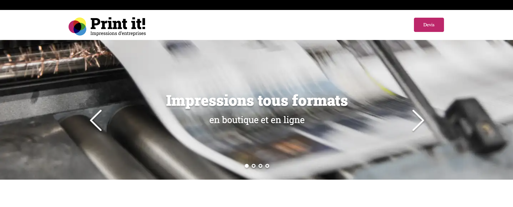

Ajout d'un carrousel interactif en JavaScript sur un site statique existant, pour mettre en pratique mes premiers pas en JavaScript et comprendre son interaction avec le HTML et le CSS.
Rôle
Développeuse Front-End
Livrable
Carrousel interactif · HTML/CSS/JS
Secteur
Formation OpenClassrooms
Contexte
J'ai commencé à apprendre JavaScript et ce projet m'a permis de le mettre en pratique pour la première fois. Mon objectif était de rendre un site internet statique plus dynamique en y ajoutant un carrousel interactif. Ce projet m'a donné un bon aperçu du développement web interactif et m'a permis de faire mes premiers pas concrets en JavaScript.
Ma mission
Outils
Visual Studio Code pour écrire le code, GitHub pour enregistrer le travail et gérer les différentes versions.
Démarche
Adaptation de la structure existante pour intégrer les éléments nécessaires au carrousel.
Mise en place des écouteurs d'événements pour permettre la navigation manuelle entre les slides.
Ajout d'indicateurs visuels permettant de suivre et de sélectionner la slide active.
Implémentation de la logique JavaScript déclenchant le changement de slide au clic.
Gestion des cas limites pour permettre un défilement continu, sans interruption en fin de liste.
Technologies

Bilan
Ce projet a été une première mise en pratique concrète du JavaScript après une phase d'apprentissage théorique. Il m'a permis de comprendre en profondeur comment le JavaScript s'articule avec le HTML et le CSS pour créer des interactions dynamiques : gestion des événements, manipulation du DOM, et logique de défilement infini.
Code source
L'ensemble du code HTML/CSS/JavaScript est disponible en open source, accompagné de son historique de versions.
Voir le projet sur GitHub